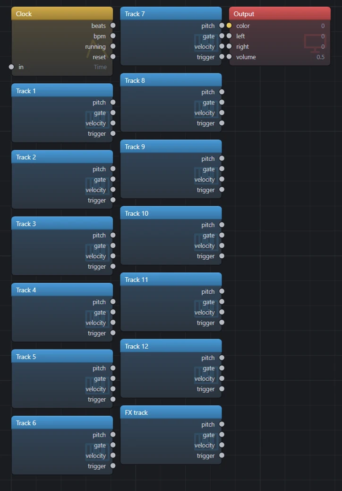
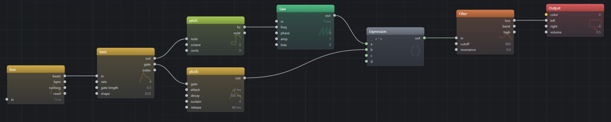

01What you need
A Syntakt, a USB cable, and Flyback on Windows, macOS or Linux. Nothing else: the Syntakt is a class compliant USB device, so no driver is installed, and Flyback ships knowing what a Syntakt is. Its MIDI OUT works too, through any MIDI interface, if you would rather keep USB for something else.
Everything below assumes the box is at its factory MIDI channels: tracks 1 to 12 on channels 1 to 12 and the FX track on channel 13. If you have changed them, keep reading; the last section is for you.
02Set up the Syntakt
Eight settings on the box, all under [SETTINGS]. Most are already right on a fresh unit; the two that matter most are that it sends its clock and that its knobs send what they do.
| Menu | Setting | Set it to | Why |
|---|---|---|---|
| SYSTEM › USB CONFIG | USB CONFIG | USB MIDI or USB AUDIO/MIDI |
Either puts the Syntakt on the computer as a plain MIDI device. OVERBRIDGE talks to
Elektron's own driver instead, and Flyback does not hear it. |
| MIDI CONFIG › SYNC | CLOCK SEND | on | The clock is the whole point: Flyback's Clock In follows it. |
| MIDI CONFIG › SYNC | TRANSPORT SEND | on | Play and Stop on the box start and hold Flyback's beats. PRG CH SEND is up to you. |
| MIDI CONFIG › PORT CONFIG | OUTPUT TO | USB or MIDI+USB |
Where the clock, the notes and the knobs go. Over a MIDI cable, MIDI and
OUT PORT FUNCTIONALITY at MIDI. |
| MIDI CONFIG › PORT CONFIG | OUTPUT CH | the track channel | Each track's knobs send on that track's channel, so Flyback can tell track 3's filter from track 4's. On the auto channel every track sends on one. |
| MIDI CONFIG › PORT CONFIG | PARAM OUTPUT | CC |
Flyback listens for control changes, not NRPN. |
| MIDI CONFIG › PORT CONFIG | ENCODER DEST | INT + EXT |
On INT a knob only changes the Syntakt, and nothing reaches the cable. |
| MIDI CONFIG › CHANNELS | TRACK 1–12, FX CONTROL CH | 1–12, 13 | The factory layout, and what Flyback's Syntakt profile expects. A track set to OFF
sends nothing. |
The MIDI tracks' notes go out on the channel set on each track's SYN page (CHAN),
whatever the CHANNELS menu says. Leave those at their track numbers too and everything lines up.
03Check that Flyback hears it
- Plug the Syntakt in and open Flyback. Open Settings → MIDI. The first line names the plugin doing the hearing, Windows MIDI, CoreMIDI or ALSA MIDI, and the last says Known by name: Syntakt.
- Press Space over the canvas and add a MIDI In. Its listens to
field lists the Syntakt beside the computer keyboard. If it does not, the box is in Overbridge mode or
OUTPUT TOis off; fix that on the box and add the module again. - Press [PLAY] on the Syntakt. Add a Clock In from the Timing family;
it follows the Syntakt on its own. Select it and watch its
bpmread the box's tempo.
You can delete both modules now. The next step adds them properly.
04Add the whole box
Start a new patch. Press Space over the canvas: while the Syntakt is plugged in, the module list opens with Instruments › Syntakt at the top, above the groups. Pick it.

They arrive selected. Click the background, then delete the tracks you will not use: a patch that draws from the kick, the hat and a bass needs three. Select Track 1 and look at the inspector: listens to is the Syntakt, and channel is a list of its tracks rather than a number, because Flyback knows the box.
05Keep to its clock
The Clock In's beats count from the moment you press [PLAY] on the box, at whatever tempo the
box is sending, and hold when you press [STOP]. Anything that takes a domain, a sequencer, a Tempo, an LFO,
takes beats in place of time and is then on the Syntakt's bar. Press F2 and paste
this over the text, then press [PLAY] on the box:
# The Syntakt keeps time; the sequencer steps four times a beat.
let box = midi.clock(device: "midi:elektron-syntakt")
let bass = notes(in: box.beats, rate: 4) [ C2 ~ C2 G1 C2 ~ D#2 C2 ]
saw(freq: bass |> note())
* (bass.gate |> adsr(attack: 2ms, decay: 180ms, sustain: 0, release: 60ms))
|> filter(cutoff: 900, resonance: 0.4)
|> out.left
out.volume = 0.5
beats into the sequencer's in.- The
deviceis the port's name as an id: lower case, hyphens for spaces, aftermidi:. The modules you added in step 04 carry the right one already; if yours is notmidi:elektron-syntakt, press F2 on that patch and read it off a MIDI In. rateis steps per beat. Four is sixteenths, which is the Syntakt's own grid; one is quarter notes.- Change the tempo on the box and the bass follows within a beat. Press [STOP] and it holds; press [PLAY] and it starts from the top, with the box.
- The Clock In's other outputs:
bpmis the tempo as a number,runningis high between [PLAY] and [STOP], andresetpulses on [PLAY], for restarting an envelope or an LFO with the pattern.
06Light the picture from its tracks
Each track's MIDI In has pitch, gate, velocity and
trigger, and hears only its own track because it is on that track's channel. One thing to know
about the box first: a drum track's trigs stay inside it. What leaves over MIDI is what a MIDI machine
track sequences, on the channel its SYN page names. So give the picture two MIDI tracks: on track 11 press
[FUNC] + [SYN], pick the MIDI machine and leave CHAN at 11;
the same on track 12. Enter the kick's trigs on 11 and the hat's on 12, beside the drum tracks that make the
sound. Then:
# Track 11 doubles the kick, track 12 the hat: each lights its own part of the picture.
let box = midi.clock(device: "midi:elektron-syntakt")
let kick = midi.in(device: "midi:elektron-syntakt", channel: 11)
let hat = midi.in(device: "midi:elektron-syntakt", channel: 12)
(rings(freq: 3 + kick.gate * 2, offset: box.beats * 0.25) |> remap(-1..1, 0..1))
* (0.25 + hat.gate * 0.75)
|> color.hsv(hue: fract(box.beats / 16), saturation: 0.8)
|> out.color
out.volume = 0- The kick tightens the rings while its gate is open; the hat brightens them. The hue turns once every sixteen beats, which at the box's sixteenths is once a bar of four, and the rings drift with the beat.
- A trig's gate is as long as its note length on the box, so a short trig is a flash and a long one holds. For a decay that outlasts the trig, put the gate through an ADSR with a release, as the bass does.
- The knobs and the clock need no MIDI track: every track's knobs go out on its channel whatever machine it runs, and the clock is the box's own.
- Both patches together are one patch: keep the bass under
out.leftand the rings underout.color, sharing the onebox. Setout.volumeback up.
07Turn its knobs from the panel
A panel knob follows a knob on the Syntakt, and because Flyback knows the box, it never has to be learned by ear.
- Open the knob panel and add a knob. Click its name, then the filter's
cutoffsocket, so the knob sweeps it; press Esc. - Open the knob's menu and choose Bind to › Syntakt › Track 3 › Filter Frequency. Under the knob it now says Syntakt · Track 3 · Filter Frequency. Turn the filter knob on the box with track 3 active and the panel knob turns with it.
- Or learn it: choose Learn MIDI controller and turn a knob on the box. The binding is named the same way, and it keeps the track's channel, so the same knob on track 4 does not move it.
- For a panel of several knobs, choose Learn this and every knob after it on the first one. The light walks the panel; turn one knob on the box per step, and Esc when done.
A bound knob is saved with the patch. Settings → MIDI chooses whether a knob jumps to the box's position or waits to be picked up.
08Play
Double-click the preview for full screen; the panel's knobs come with it. [PLAY] on the Syntakt starts the beats from the top, [STOP] holds them, a pattern change at the box's tempo keeps the picture on its bar, and every trig you enter in the box lands in the patch. Flyback's own play and pause (Ctrl+P) stop the picture and the sound, not the box, and on resume the beats jump to wherever the box has got to.
Save the patch and it remembers the Syntakt by name. Open it on a machine without one and every module says so, and plays again the moment a Syntakt is plugged in.
09Another box, or a Syntakt set up differently
What Flyback knows about the Syntakt is a file: its port name, its tracks and their channels, its knobs by
page and the control change each sends, and that it conducts. Settings → MIDI lists the
instruments known and the folder where a file of your own goes, one .json per instrument.
A Syntakt on other channels is the shipped file copied there and edited; a file with the same name replaces the shipped one. A Digitakt, a Digitone or a controller with a printed CC chart is a new file of the same shape, and then everything on this page works for it too: the whole box from the module list, tracks by name, knobs from a menu.